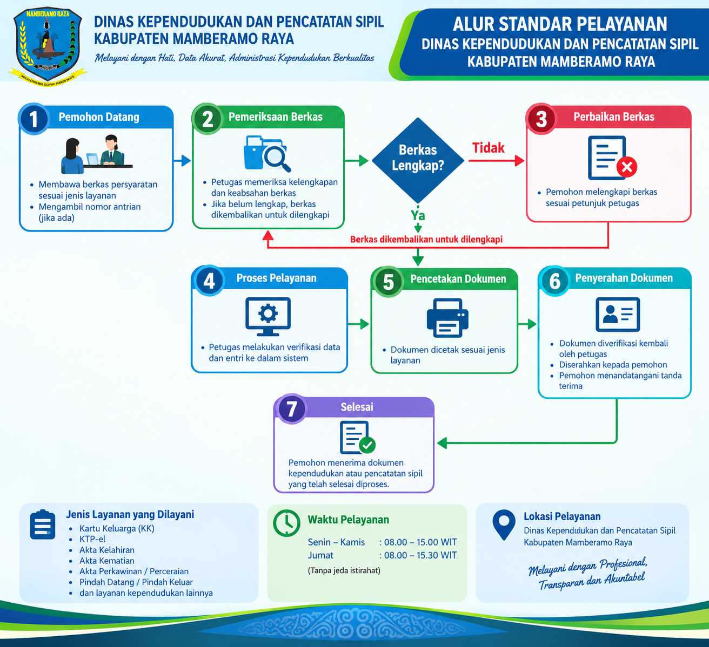

Alur di atas merupakan gambaran umum proses pelayanan. Persyaratan dan waktu penyelesaian dapat berbeda menurut jenis layanan serta ketentuan resmi yang berlaku.
Dinas Kependudukan dan Pencatatan Sipil Kabupaten Mamberamo Raya

Alur di atas merupakan gambaran umum proses pelayanan. Persyaratan dan waktu penyelesaian dapat berbeda menurut jenis layanan serta ketentuan resmi yang berlaku.